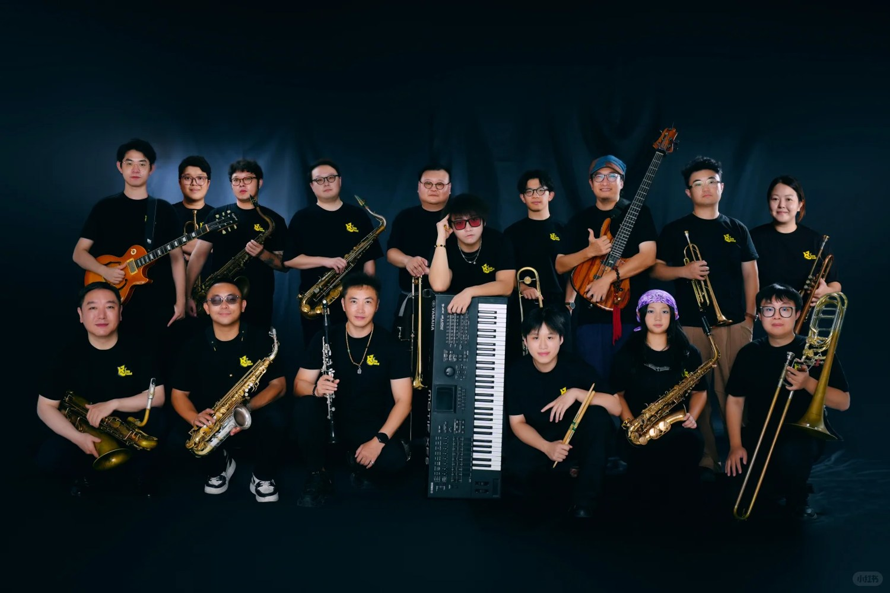

音乐会介绍
从校园排练厅到爵士舞台，
从第一次合作到十几年的默契相视，
苗梦初与RJ爵士大乐团，
早已是彼此音乐路上最熟悉的老友。
这一晚，
只用大乐团的铜管、节奏与人声，
把十几年来的信任、成长与热爱，
完整地交还给舞台，
共同见证「爵妙人生」的又一章。
苗梦初
演员/歌手，毕业于上海音乐学院音乐剧系本科，英国皇家音乐学院硕士。
2023年东方卫视音乐剧综艺《爱乐之都·青春季》总冠军；湖南卫视《声鸣远扬2025》全国8强。

RJ爵士大乐队
2011年9月成立于上海，目前分为18人编制爵士大乐团和10人编流行乐团两套班底。是全国成立时间最久、成员最多的大乐团之一。2022年起签约爱乐汇，目前在全国16个省市自治区演出300余场。
团长顾伊欣，历任音乐总监；
指挥：萨克斯演奏家、教育家、作曲家钱瑜先生，人声艺术家、教育家孙莉莎女士；
现任音乐总监、指挥：萨克斯演奏家、教育家薛岳先生。
乐团除了在爵士音乐艺术道路上追求高品质，演出曲目涵盖了从美国30年代传统爵士乐及大乐团黄金时期，到当今的流行、放克、摇滚等多种音乐风格。